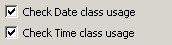
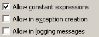
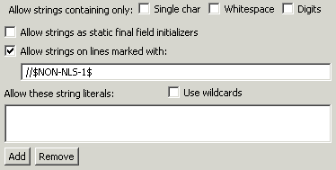
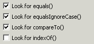
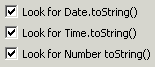

Audit - Rules - InternationalizationDescriptionThis group contains audit rules that check for potential problems unique to internationalized applications. |
| Rules: |
Summary
Character values should not be compared using any of the non-equality operators.
Description
This audit rule finds places where two Character values are compared using any of the non-equality operators. Such comparisons are usually an attempt to classify characters and such tests are usually not valid across all locales.
Example
The following code, designed to test for a lower-case letter, would be flagged as a violation:
if (ch >= 'a' && ch <= 'z') {
...
}
Summary
Don't use deprecated Date and Time methods.
Description
Deprecated methods from the Date and Time classes should not be used. As of JDK 1.1, the Calendar class should be used to convert between dates and time fields, and the DateFormat class should be used to format and parse date strings.
Example
The following use of the parseInteger() method would be flagged as a violation:
Date myDate = Date(2005, 10, 12);
int year = myDate.getYear();

Summary
Don't use specific mime encoding methods.
Description
Don't use specific mime encoding methods.
Summary
The parseXXX() methods for Numerics should not be used in an internationalized environment.
Description
This audit rule checks for the use of the parseXXX() methods for Numerics in an internationalized environment. Numeric formats differ with region and language, so consistent results cannot be counted on.
Example
The following use of the parseInteger() method would be flagged as a violation:
myInt = Integer.parseInteger("12345");
Summary
Strings should not be concatenated.
Description
This audit rule finds places where two Strings are concatenated. Concatenation of localized strings to produce a longer string is not valid because the word order can change from one locale to the next. Instead, the class MessageFormat should be used to construct the string based on a pattern that can be localized for each locale.
Example
The following expression would be flagged as a violation:
return "The button was clicked " + clickCount + " times.";

Summary
String literals should not appear in code.
Description
This audit rule checks for string literals within the code that are not included in a user-defined list of acceptable literal values. The rule can be configured to ignore strings that are used as static final field initializers, contain single characters, only whitespace and/or digits and/or a specially formed trailing comment.
The primary purpose of this rule is to aid in internationalization efforts. With this rule on, you can identify all of the hardcoded strings in the application and move them out into external property files that can be translated.
Example String message = "Houston, we have ignition.";

Summary
The String.equals(), String.equalsIgnoreCase() and String.comparesTo() methods should not be used in an internationalized environment.
Description
This audit rule checks for the use of the String.equals(),String.equalsIgnoreCase(), String.comparesTo() and String.indexOf() methods in an internationalized environment. These methods cannot be relied on to sort strings because the Unicode values of the characters in the strings do not correspond to the relative order of the characters in most languages.
Example
The following expression would be flagged as a violation:
if (stringArray[i].equals(stringToInsert)) {
...
}

Summary
The StringTokenizer class should not be used in an internationalized environment.
Description
This audit rule checks for the use of the StringTokenizer class in an internationalized environment. This class cannot be relied on because the Unicode values of the characters in the strings do not correspond to the relative order of the characters in most languages.
Example
The following instance creation expression would be flagged as a violation:
new StringTokenizer(inputString)
Summary
The toString() methods for Dates, Times and Numerics should not be used in an internationalized environment.
Description
This audit rule checks for the use of the toString() methods for Dates, Times and Numerics in an internationalized environment. Date, time and numeric formats differ with region and language, so consistent results cannot be counted on.
Example
The following use of the toString() method would be flagged as a violation:
today = new Date();
dateString = today.toString();

Summary
Locale-specific methods should be used to convert Strings to either upper or lower case.
Description
This rule looks for invocations of either toUpperCase() or toLowerCase() that do not have an instance of Locale as an argument. When converting a String to either upper or lower case, the locale-specific method should be used to ensure proper conversion.
Example
The following would be flagged as an error because the invocation of toLowerCase does not have a Locale as an argument:
if (x.toLowerCase().equals("test"))